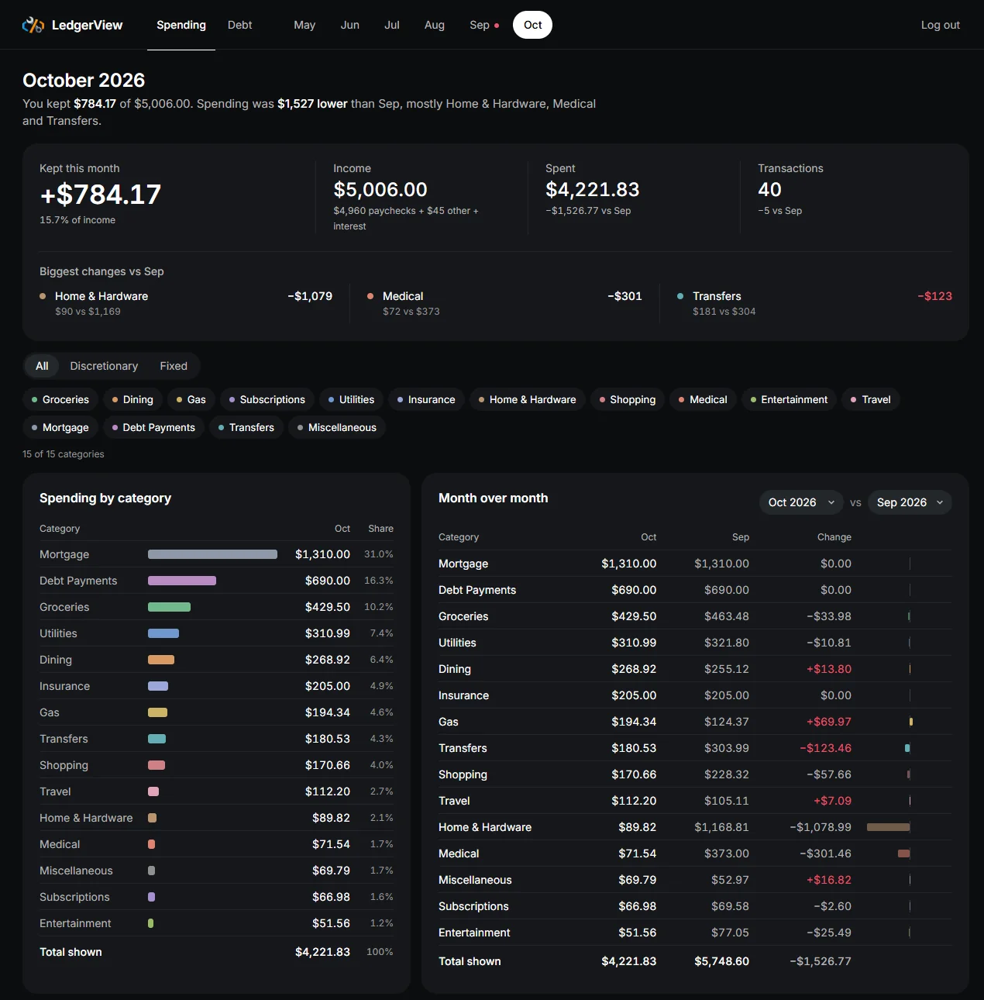
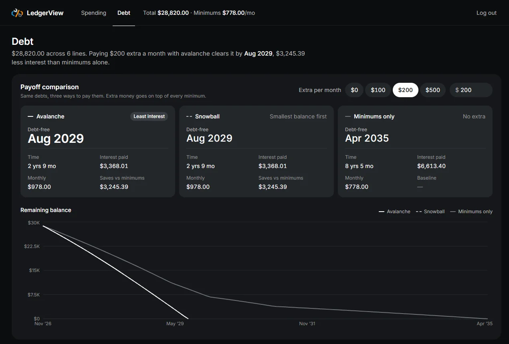

LedgerView
A read-only dashboard for where my money goes.
React · Fastify · SQLite
- Status
- In use
- Published
- Tabs
- 2
- Categories
- 15
- Containers
- 3
- Bank connections
- 0
Why I built it
I wanted to see where my money goes each month. I didn't want a budget or alerts, only a picture of what came in, what went out, and which categories moved. Every app that offered that wanted my bank login first, and I wasn't willing to hand that over, so I built the picture myself from the statements I already download.
What it is
LedgerView is a self-hosted dashboard with two tabs. Spending shows one month at a time: what I kept, what moved most against the month before, spending by category, a month-over-month table, trends, and income against spending across six months. Debt compares three ways to pay everything off (avalanche, snowball, and minimums only) and shows when each plan finishes and how much interest it costs, with an input for paying extra each month.


It's read-only by design: it has no bank connections, no transaction entry, and no budgeting. Once a month I give Claude the CSV exports from my accounts. It sorts every transaction into one of 15 fixed categories, asks me about anything unclear, writes the month up in my notes, and uploads the result to LedgerView. My notes are the source of truth, and LedgerView is the picture on top of them.
The stack, and why
React and TypeScript, with Recharts. The dashboard is all charts and tables. Recharts covered every chart without hand-drawing SVG.
Fastify and SQLite. One user and a modest amount of data each month. SQLite in a single file is plenty, and Fastify keeps the API small. Money is stored as whole cents, so totals and duplicate checks are exact.
Docker Compose. Three containers: the API, an nginx front end that serves the dashboard, and a small MCP server that handles uploads.
The interesting parts
Getting the last manual step out
For the first five months, the upload was a script. Claude wrote it, I ran it, and the API key was written into the script. I looked at three ways to remove that step: let LedgerView read my notes directly, let my server-ops tool send the data, or give LedgerView its own connector.
I picked the connector. It's a small MCP server behind the same login gateway as my other connectors (more on that in the infrastructure write-up). It has three tools: upload transactions, upload a month's summary, and upload debts. It has no tool to read data and none to delete it, on purpose. The server holds the API key and adds it to each upload, so Claude never sees it. Its logs record only the tool used, the item count, and the status, never amounts or merchants.
Uploading twice is safe
Every transaction is checked against date, merchant, amount, and account before it's saved, so re-uploading a month changes nothing. The first real test of the connector was exactly that: a whole month sent again, and every row came back as a duplicate. A row that fails validation is rejected on its own with a reason, and the rest still save.
One source for every number
Several panels show the same figure, like a month's spending in the summary, the category table, and the six-month chart. Instead of each panel asking the API for its own numbers, the dashboard loads every month's summary and every category's monthly totals once and works out every panel from them, so a figure shown in two places always matches.
The redesign
The first version worked but looked like a default template. For the redesign I had four Claude design skills each mock up the dashboard and compared them side by side. One won, and I took the share-of-total column from a second one plus paired income and spending bars. The result is dark and flat, with one muted color per category used everywhere that category appears. Red is kept for bad news, like a month that spent more than it earned or a category that went up.
What's next
I don't plan much more, since it does the one job I wanted. Once there's a full year of data, a year view is the obvious next panel.
What I'd do differently
I'd build the connector first. I ran the upload script by hand for five months, and that shortcut lasted longer than it should have.